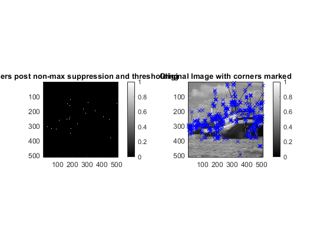

Contents
MyMainScript
clear;
tic;
myNumOfColors = 256;
myColorScale = [ [0:1/(myNumOfColors-1):1]' , [0:1/(myNumOfColors-1):1]' , [0:1/(myNumOfColors-1):1]' ];
path = load('../data/boat.mat');
Input = path.imageOrig;
Input = double(Input);
[Img_blur, Ix, Iy, min_eig, max_eig, corn_measure, corners, final_img] = myHarrisCornerDetector(Input, 0.5, 1.4 ,0.01);
Original and smoothed image
figure;
subplot(1,2,1);
imagesc(Input), title('Input Image') ;colormap(myColorScale); colormap gray; colorbar;
daspect([1,1,1]);
axis tight;
subplot(1,2,2);
imagesc(Img_blur), title('Image with Gaussian smoothening') ;colormap(myColorScale); colormap gray; colorbar;
daspect([1,1,1]);
axis tight;
Partial Derivatives along X and Y axis
figure;
subplot(1,2,1);
imagesc((Ix-min(min(Ix)))./(max(max(Ix))- min(min(Ix)))), title('Derivative along X-Axis') ;colormap(myColorScale); colormap gray; colorbar;
daspect([1,1,1]);
axis tight;
subplot(1,2,2);
imagesc((Iy-min(min(Iy)))./(max(max(Iy))- min(min(Iy)))), title('Derivative along Y-Axis') ;colormap(myColorScale); colormap gray; colorbar;
daspect([1,1,1]);
axis tight;
Principal and other Eigen Value Images
figure;
subplot(1,2,1);
imagesc((max_eig-min(min(max_eig)))./ ((max(max(max_eig)))- min(min(max_eig)))), title('Image of Principal Eigen Value') ;
colormap(myColorScale); colormap gray; colorbar;
daspect([1,1,1]);
axis tight;
subplot(1,2,2);
imagesc((min_eig-min(min(min_eig)))./ ((max(max(min_eig)))- min(min(min_eig)))), title('Image of Other Eigen Value') ;
colormap(myColorScale); colormap gray; colorbar;
daspect([1,1,1]);
axis tight;
Harris Response
figure;
imagesc((corn_measure- min(min(corn_measure)))./(max(max(corn_measure))- min(min(corn_measure)))), title('Cornerness before non-max suppression and thresholding');
colormap(myColorScale); colormap jet;
daspect([1,1,1]);
axis tight;
colorbar;
Corners and Final Image
[r,c] = find(corners);
figure;
subplot(1,2,1);
imagesc(corners), title('Corners post non-max suppression and thresholding') ;colormap(myColorScale); colormap gray; colorbar;
daspect([1,1,1]);
axis tight;
subplot(1,2,2);
imagesc(final_img), title('Original Image with corners marked'); colormap(myColorScale); colormap gray; colorbar;
daspect([1,1,1]);
axis tight;
hold on;
plot(c,r,'x','color','b','linewidth',0.7);
hold off;
toc;
Elapsed time is 7.319124 seconds.
